Parmi les plus beaux villages médiévaux de Catalogne, plusieurs se trouvent dans la plaine juste à l'intérieur des terres depuis Tamariu, assez proches pour en enchaîner plusieurs en une seule journée, sans se presser. Ce circuit en autonomie forme une boucle naturelle — Begur, Pals, Palau-sator, Peratallada, Ullastret et Monells — avec, pour chacun, le temps de route, le stationnement, les curiosités et les meilleures adresses pour un café ou un long déjeuner.
Quelques remarques pratiques. Tous les temps de route ci-dessous sont approximatifs et mesurés en voiture depuis le chalet ; comptez un peu plus en juillet et août, quand les routes et les parkings sont les plus fréquentés. Le centre historique de chaque village est piéton : le principe est donc toujours le même, se garer à l'entrée et continuer à pied. Les parkings des villages sont en général gratuits hors saison et payants (barrière ou horodateur en zone bleue) de juillet à début septembre environ. Les matinées sont fraîches et calmes pour flâner dans les ruelles ; la lumière de fin d'après-midi est superbe pour les photos.
Un village perché couronné par un château en ruine, célèbre pour ses grandes demeures d'« Indianos » — des maisons ostentatoires bâties par des habitants ayant fait fortune à Cuba au XIXe siècle avant de rentrer les construire.
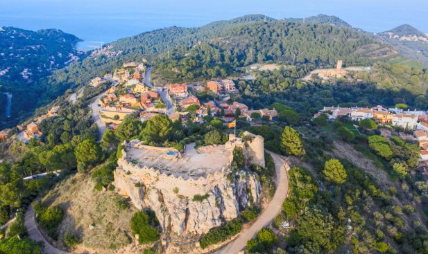
En voiture depuis Tamariu
~20 minDistance
~10 kmL'itinéraire le plus simple passe par l'intérieur des terres via Palafrugell et Esclanyà, puis monte vers Begur. Les rues du centre sont étroites et pentues : utilisez les parkings et les places payantes en zone bleue en périphérie ; le stationnement n'est payant qu'en juillet, août et début septembre. Si le village est complet, le parking sur la route qui descend vers Sa Riera n'est qu'à quelques minutes de marche en remontant.
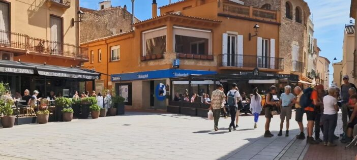
Les terrasses de la Plaça de la Vila et de la Plaça Esteve i Cruañas sont l'endroit idéal pour un café en milieu de matinée sous les platanes. Pour le déjeuner, le choix est large dans le centre, des tavernes catalanes à la cuisine méditerranéenne moderne ; en été, les restaurants de plage de Sa Riera et Sa Tuna offrent une belle alternative en bord de mer.
La Fira d'Indians, le premier week-end de septembre, est le grand rendez-vous — le village fait revivre son lien avec Cuba par un marché de produits d'outre-mer, des chants de havaneres et de la musique caribéenne. En août, des rassemblements de havaneres en plein air ont lieu sur la place et sur la plage de Sa Riera.
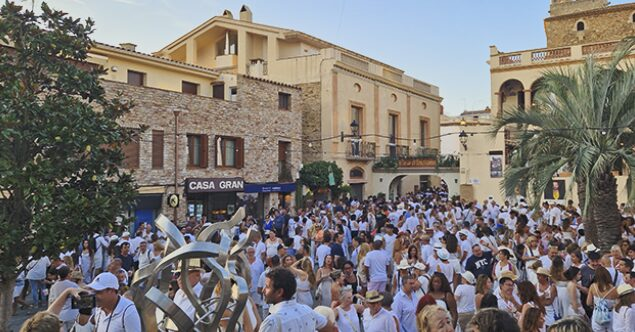
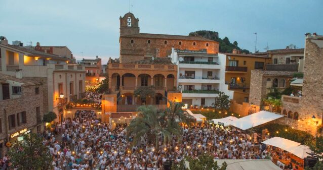
Un quartier médiéval superbement restauré, en pierre couleur miel, entouré de rizières, avec une tour gothique et des belvédères qui portent le regard à travers la plaine jusqu'à la mer.
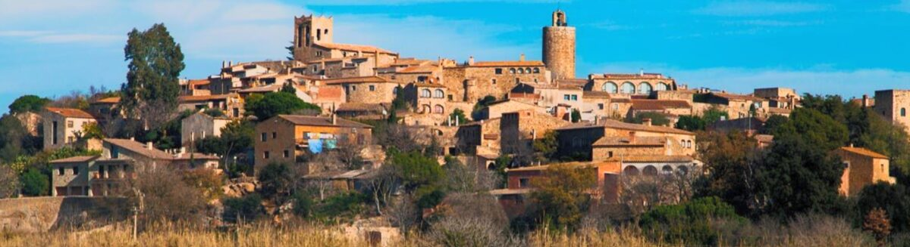
En voiture depuis Tamariu
~25 minDistance
~16 kmLaissez la voiture dans les parkings gratuits en contrebas de la vieille ville, près de la Torre de les Hores, puis montez à pied jusqu'à El Pedró, le centre historique. Il y a foule en août : mieux vaut arriver tôt.
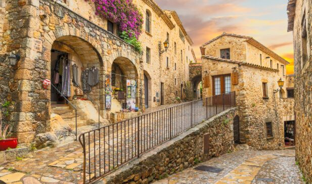
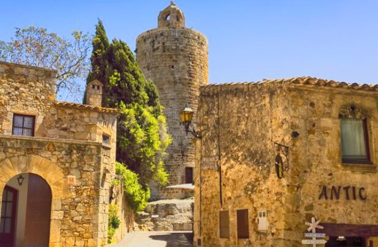
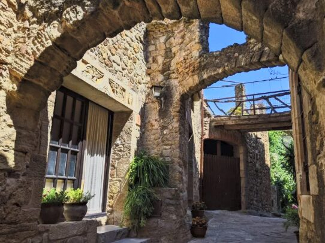
Les terrasses de café se regroupent sur les places de la vieille ville — choisissez-en une avec vue sur la vallée. Pour déjeuner, Es Portal et Sol Blanc sont tous deux excellents, et La Vila propose une cuisine catalane traditionnelle ; ici, ce sont les riz de la région qu'il faut commander.
La Festa Major, début août, remplit le village de concerts, de danses et de processions. En automne, la Fira de l'Arròs célèbre la récolte locale du riz avec dégustations et animations culturelles, et une foire aux vins, cava et fromages se tient dans la cour de Ca La Pruna.
Un tout petit village fortifié doté d'une tour défensive, au cœur d'un ensemble de hameaux paisibles et réputé pour sa bonne cuisine du terroir.
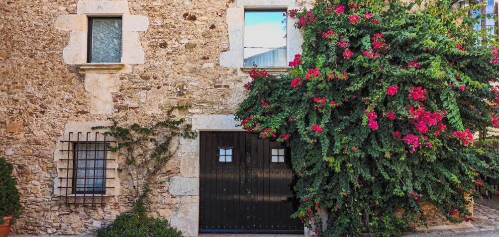
En voiture depuis Tamariu
~28 minDistance
~19 kmIci, les ruelles sont étroites et discrètes. Garez-vous à l'entrée du village, le long de la route, et continuez à pied — rarement un problème en dehors des week-ends de forte affluence.
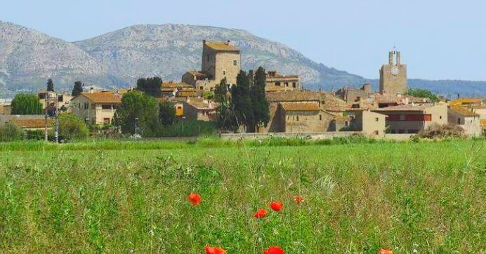
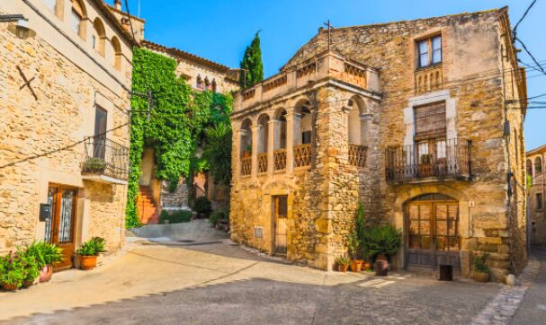
C'est un coin tranquille, et les terrasses des restaurants du village font aussi office de pause-café — une partie du charme tient à ce sentiment de lieu préservé. Pour le déjeuner, les hameaux valent bien mieux que leur taille : Can Bach, dans un mas du XVIIIe siècle, et Can Joan, à Sant Feliu de Boada, brillent par leur cuisine familiale traditionnelle de l'Empordà.
Le village conserve une Festa Major estivale traditionnelle en août — un événement local sans prétention, fait de musique et de repas partagés, loin des grandes foires médiévales de ses voisins.
Peut-être le plus spectaculaire de tous — un village taillé dans la roche, avec des douves, un château, une place à arcades et un dédale de ruelles pavées.
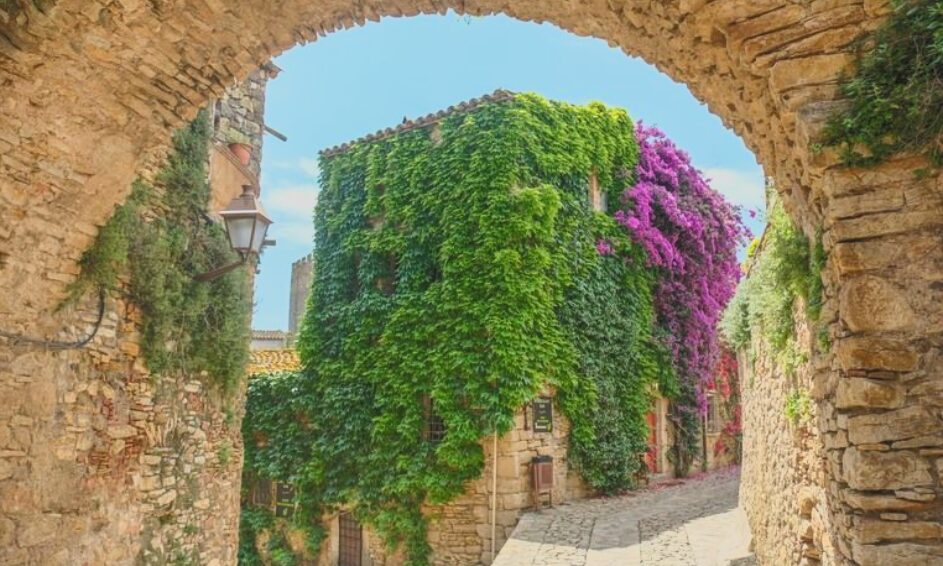
En voiture depuis Tamariu
~30 minDistance
~22 kmTrois parkings entourent le village ; ils sont payants en été et le week-end, gratuits pendant les mois plus calmes. Garez-vous et parcourez à pied les dernières minutes jusqu'au centre.
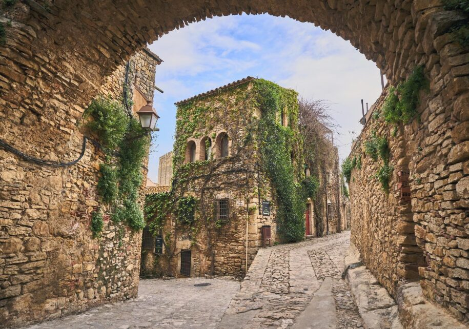
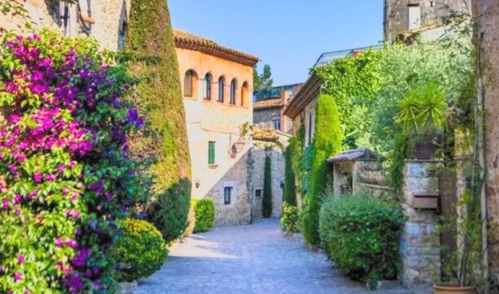
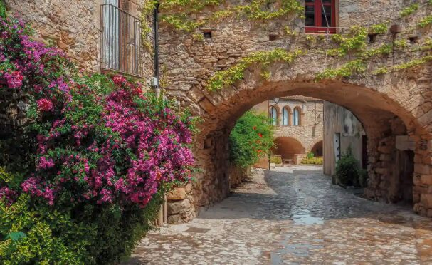
Un vermouth ou un café au Bar del Castell s'accompagne d'une vue sur le château, et les terrasses sous les arcades de la Plaça de les Voltes sont l'adresse classique. Pour déjeuner, cherchez l'arròs a la cassola, le riz en cocotte, plat local à goûter ici.
La Fira Medieval de Peratallada, le premier week-end d'octobre, transforme toute la vieille ville en un marché médiéval de bouffons, d'artisans et de personnages costumés — l'une des plus belles de la région.
Un village médiéval fortifié avec un atout remarquable : sur la colline juste à la sortie se dresse le plus grand site ibère de Catalogne, vieux de plus de deux mille cinq cents ans.
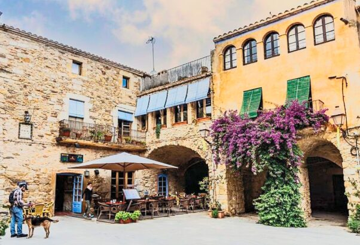
En voiture depuis Tamariu
~30 minDistance
~22 kmGarez-vous à l'entrée du vieux village. Le site ibère, en haut du Puig de Sant Andreu, dispose de son propre parking à quelques minutes en voiture.
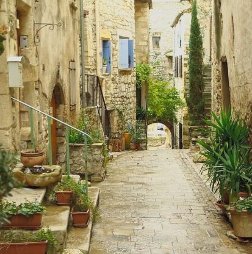
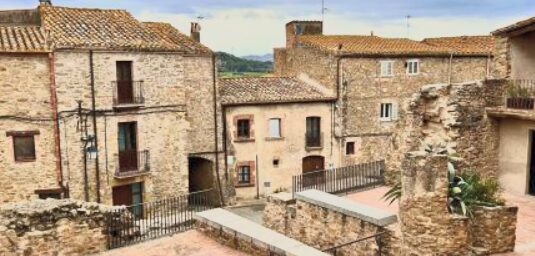
Une place de village tranquille avec une terrasse de bar ou deux offre une pause paisible après la visite des ruines. Quelques restaurants dans le village et alentour servent une cuisine du terroir de l'Empordà, qui se marie bien avec une matinée sur le site archéologique.
La Festa Major a lieu début août, avec musique et cuisine locale. Le site ibère propose aussi de populaires visites théâtralisées d'« histoire vivante » qui recréent la vie ibère, avec ateliers et stands thématiques.
La place la plus digne d'une carte postale — une plaça à arcades magnifiquement conservée, apparue dans des films espagnols et pourtant merveilleusement calme.
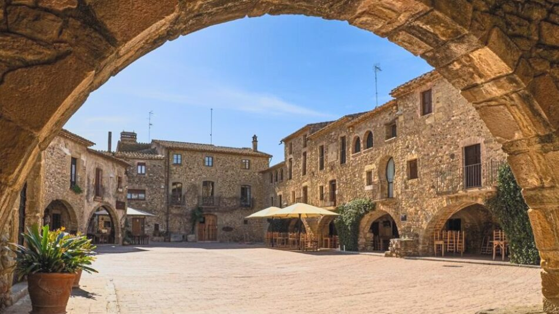
En voiture depuis Tamariu
~35 minDistance
~28 kmIl y a un parking gratuit à l'entrée du village, et le centre est à quelques minutes de marche à plat — en général le plus facile des six pour se garer.
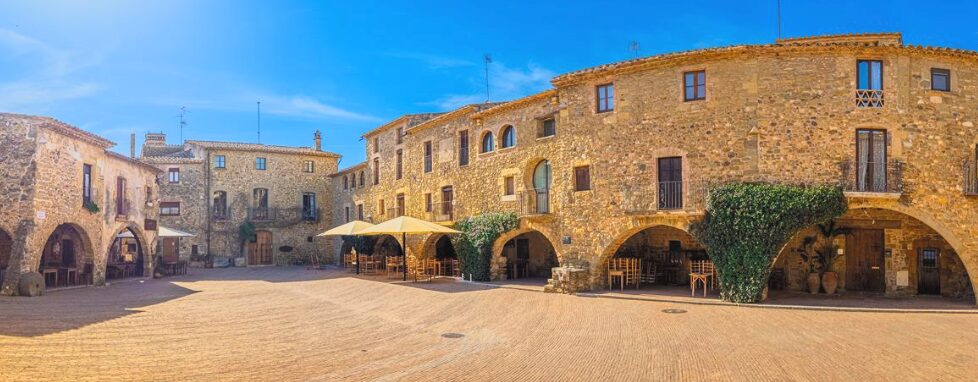
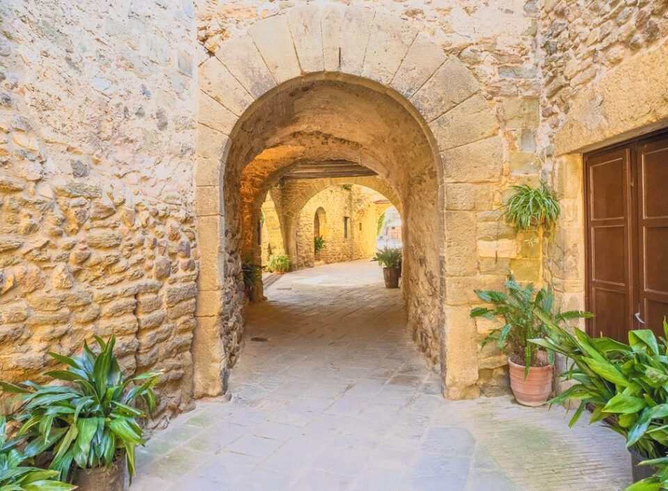
Les arcades de la place principale sont faites pour un café sans hâte — l'un des plus jolis endroits où s'asseoir de tout l'Empordà. La place et les ruelles alentour comptent des restaurants bien notés, et La Bisbal, à cinq minutes, offre encore plus de choix si vous le souhaitez.
La Festa Major de Sant Genís, fin août, est la fête traditionnelle du saint patron du village, avec repas partagés, musique et danses sur la place à arcades.
Les dates exactes varient un peu chaque année : mieux vaut vérifier les sites de tourisme du village ou de la Costa Brava avant de partir — mais les mois sont fiables.
| Quand | Village | Fête |
|---|---|---|
| Début août | Pals | Festa Major — concerts, danses et processions |
| Début août | Ullastret | Festa Major et visites d'histoire vivante ibère |
| Août | Palau-sator | Festa Major, une fête villageoise traditionnelle |
| Août | Begur | Havaneres en plein air sur la place et sur la plage de Sa Riera |
| Fin août | Monells | Festa Major de Sant Genís |
| Premier week-end de septembre | Begur | Fira d'Indians, la foire de l'héritage cubain |
| Premier week-end d'octobre | Peratallada | Fira Medieval, le grand marché médiéval |
| Automne | Pals | Fira de l'Arròs et la foire aux vins et fromages |